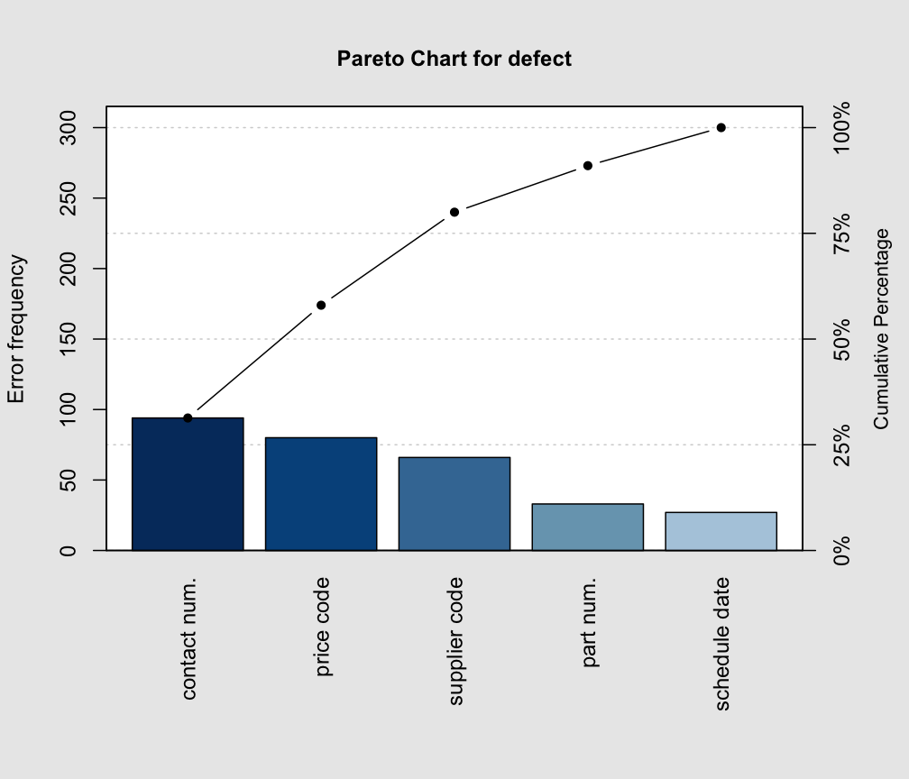
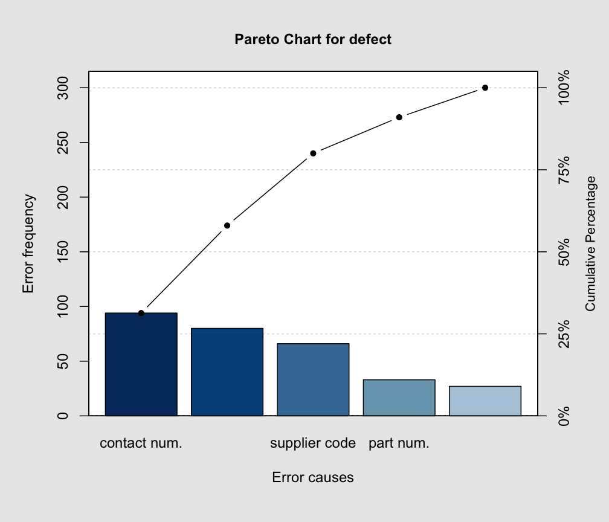
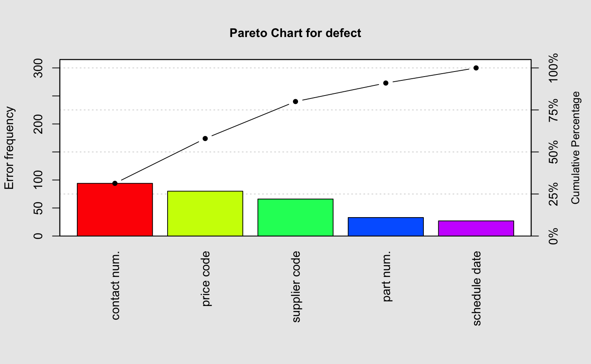
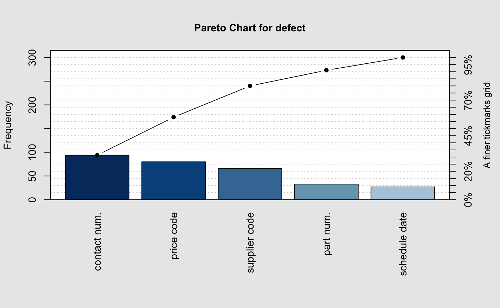

Computes a table of statistics and plot a Pareto chart.
pareto.chart(data, plot = TRUE, …)
# S3 method for pareto.chart
plot(x, xlab = NULL, ylab = "Frequency",
ylab2 = "Cumulative Percentage",
cumperc = seq(0, 100, by = 25),
ylim = NULL, main = NULL,
col = blues.colors(nlevels),
…)
| data | a vector of values. |
|---|---|
| plot | a logical specifying if the chart should be provided ( |
| x | the object of class 'pareto.chart' returned by a call to |
| xlab | a string specifying the label for the x-axis. |
| ylab | a string specifying the label for the y-axis. |
| ylab2 | a string specifying the label for the second y-axis on the right side. |
| cumperc | a vector of percentage values to be used as tickmarks for the second y-axis on the right side. |
| ylim | a numeric vector specifying the limits for the y-axis. |
| main | a string specifying the main title to appear on the plot. |
| col | a value for the color, a vector of colors, or a palette for the bars. See the help for |
| … | other graphical arguments to be passed to the corresponding |
Returns an object of class 'pareto.chart' containing the descriptive statistics used to draw the Pareto chart. This object has associated a print and plot mehod.
A Pareto chart is a barplot where the categories are ordered in non increasing order, and a line is also added to show the cumulative sum.
Mason, R.L. and Young, J.C. (2002) Multivariate Statistical Process Control with Industrial Applications, SIAM.
Montgomery, D.C. (2005) Introduction to Statistical Quality Control, 5th ed. New York: John Wiley & Sons.
Ryan, T. P. (2000), Statistical Methods for Quality Improvement, 2nd ed. New York: John Wiley & Sons, Inc.
Scrucca, L. (2004). qcc: an R package for quality control charting and statistical process control. R News 4/1, 11-17.
Wetherill, G.B. and Brown, D.W. (1991) Statistical Process Control. New York: Chapman & Hall.
barplot
defect <- c(80, 27, 66, 94, 33) names(defect) <- c("price code", "schedule date", "supplier code", "contact num.", "part num.") pareto.chart(defect, ylab = "Error frequency")#> #> Pareto chart analysis for defect #> Frequency Cum.Freq. Percentage Cum.Percent. #> contact num. 94.00000 94.00000 31.33333 31.33333 #> price code 80.00000 174.00000 26.66667 58.00000 #> supplier code 66.00000 240.00000 22.00000 80.00000 #> part num. 33.00000 273.00000 11.00000 91.00000 #> schedule date 27.00000 300.00000 9.00000 100.00000pareto.chart(defect, ylab = "Error frequency", xlab = "Error causes", las=1)#> #> Pareto chart analysis for defect #> Frequency Cum.Freq. Percentage Cum.Percent. #> contact num. 94.00000 94.00000 31.33333 31.33333 #> price code 80.00000 174.00000 26.66667 58.00000 #> supplier code 66.00000 240.00000 22.00000 80.00000 #> part num. 33.00000 273.00000 11.00000 91.00000 #> schedule date 27.00000 300.00000 9.00000 100.00000pareto.chart(defect, ylab = "Error frequency", col=rainbow(length(defect)))#> #> Pareto chart analysis for defect #> Frequency Cum.Freq. Percentage Cum.Percent. #> contact num. 94.00000 94.00000 31.33333 31.33333 #> price code 80.00000 174.00000 26.66667 58.00000 #> supplier code 66.00000 240.00000 22.00000 80.00000 #> part num. 33.00000 273.00000 11.00000 91.00000 #> schedule date 27.00000 300.00000 9.00000 100.00000pareto.chart(defect, cumperc = seq(0, 100, by = 5), ylab2 = "A finer tickmarks grid")#> #> Pareto chart analysis for defect #> Frequency Cum.Freq. Percentage Cum.Percent. #> contact num. 94.00000 94.00000 31.33333 31.33333 #> price code 80.00000 174.00000 26.66667 58.00000 #> supplier code 66.00000 240.00000 22.00000 80.00000 #> part num. 33.00000 273.00000 11.00000 91.00000 #> schedule date 27.00000 300.00000 9.00000 100.00000